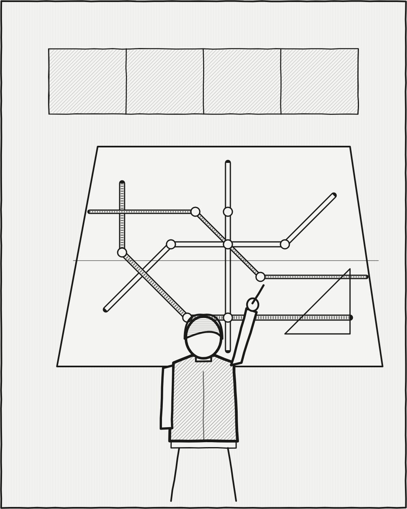

광고·마케팅 업계 뉴스 · 발행인 SM C&C 윤석진
복잡한 도시를 직선 몇 개로 정리한 질서의 디자이너

독자 여러분, 오늘은 지도를 광고처럼, 광고를 지도처럼 다룬 디자이너를 소개합니다. 마시모 비녤리는 1931년 밀라노에서 태어나 미국으로 건너갔고, 아내 렐라와 함께 뉴욕에서 비녤리 어소시에이츠를 꾸렸습니다. 그의 이름을 널리 알린 작품은 1972년 뉴욕 지하철 노선도입니다. 구불구불한 실제 지형 대신 직선과 45도 각도, 색 띠와 점만으로 노선을 정리했죠. 실제 지리와 다르다는 비판도 받았지만, 복잡한 정보를 한눈에 읽히게 만든 이 도식은 지금도 디자인 교과서에 실립니다. 단순한 서체와 격자로 기업의 얼굴을 짜는 일에도 평생 매달렸습니다. 광고인에게 그는 '덜어 내기'의 스승입니다. 말할 것이 많을수록 하나의 질서가 필요하고, 그 질서가 곧 브랜드의 목소리가 된다는 걸 보여 줬으니까요.